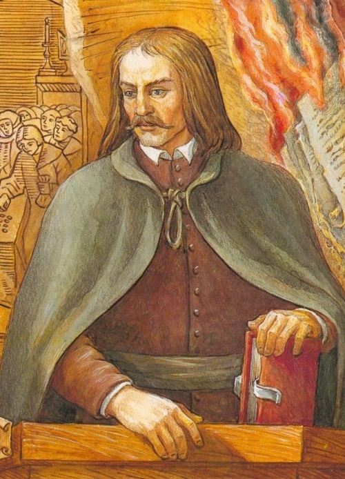

Станислав Щука
1654 г. - 19 мая 1710 г.
Белорусский шляхтич
Известнейшее произведение - «Затмение Польши».
Основные идеи: критиковал политический строй Речи Посполитой, предложил ликвидировать господство магнатов и шляхты в общественной жизни страны и провести реформирование политической системы в целях укрепления центральной власти.
Казимир Лыщинский

4 марта 1634 г. - 30 марта 1689 г.
Известнейшее произведение - «О несуществовании Бога».
Основные идеи: атеистические взгляды.
Георгий Конисский
20 ноября 1717 г. - 24 февраля 1795 г.
Православный деятель
Известнейшее произведение - «Исторические сведения о епархии Могилевской».
Основные идеи: считал Бога первопричиной всего сущего. Уважительно относился к взглядам Коперника и Галилея, собирал архивные источники по истории православной церкви в Беларуси. Конисский также выступал против всевластия магнатов в Речи Посполитой и пропагандировал необходимость сильной центральной власти.
Соломон Маймон
1754 г. - 22 ноября 1800 г.
Известнейшее произведение - «Критические исследования о человеческом духе...».
Основные идеи: первый комментатор и критик известного немецкого философа Иммануила Канта.
Казимир Нарбут
3 января 1738 г. - 17 марта 1807 г.
Философ и преподаватель
Известнейшее произведение - «Логика, или Наука рассуждения и мнения о предметах науки».
Основные идеи: считал, что философия должна служить обществу. Нарбут поддерживал реформы в стране, выражал свое восхищение строительством Королевского канала, развитием мануфактур и др.
Бенедикт Добшевич
1722 г. - 1794 г.
Декан теологического факультета Виленской академии
Известнейшее произведение - «Тезисы в универсальную философию».
Основные идеи: с уважением относился к науке, к воспитанию и образованию, выступал за разделение сфер науки, философии и религии.
Игнатий Масальский
22 июля 1727 г. - 28 июня 1794 г.
Первый председатель Эдукационной комиссии
Писал школьные программы.
Основные идеи: по его инициативе учение физиократов проповедовалось даже в костелах. В своих пастырских посланиях он говорил о насущных проблемах людей, необходимости преодоления отсталости страны, более эффективного использования земли. Масальский активно выступал против крепостного права, за право крестьян на владение землей, за совместное обучение крестьянских и шляхетских детей. Он пригласил в Речь Посполитую известного французского ученого-физиократа Н. Бодо, вел переписку с Д. Дидро.